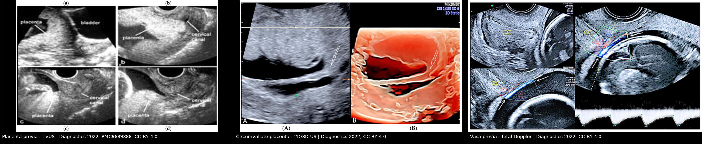
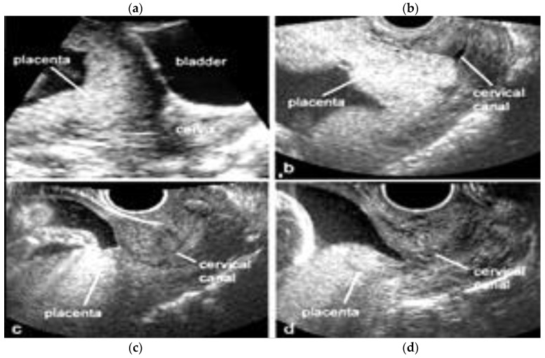
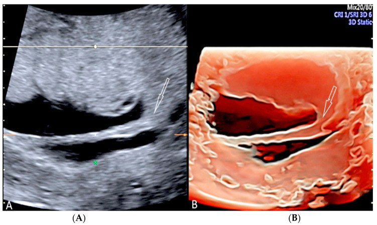
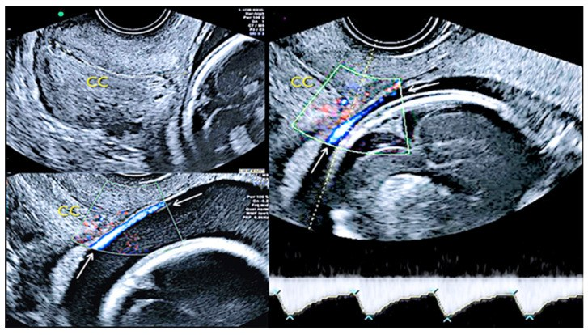

563 — Bất thường rau–bánh nhau sớm: rau tiền đạo, vasa previa & rau màng bọc quanh thai
Tags: pattern:bat-thuong-nhau pattern:chay-mau-san-khoa vung:tu-cung protocol:TVUS-thai
Mức chắc chắn (certainty): tổng hợp y văn (literature synthesis) — số liệu lấy từ guideline sản khoa và các bài tổng quan/ca có giấy phép mở; ảnh minh họa từ bài CC BY đã đối chiếu PMCID.
1. Tổng quan bệnh học – cơ chế hình ảnh
- Rau tiền đạo (placenta previa): bánh nhau bám ở đoạn dưới tử cung, che lấp hoặc sát lỗ trong cổ tử cung (internal os). Tần suất khoảng 0,5% thai đơn (1/200), tăng theo số lần mổ lấy thai, tuổi mẹ, đa thai, hỗ trợ sinh sản và hút thuốc.
- Ngưỡng định lượng quan trọng nhất: mép bánh nhau cách lỗ trong cổ tử cung < 20 mm được gọi là rau bám thấp (low-lying placenta); che hoàn toàn lỗ trong là rau tiền đạo. Đo bằng siêu âm đầu dò âm đạo (transvaginal ultrasound – TVUS), không dùng siêu âm đường bụng để kết luận vì bàng quang căng tạo dương tính giả.
- TẠI SAO “rau di chuyển” (placental migration): không phải nhau bò đi, mà đoạn dưới tử cung dài ra và cơ tử cung co rút quanh bánh nhau trong tam cá nguyệt 3; khoảng 90% rau bám thấp phát hiện ở tuần 20 sẽ “lên cao” khi đủ tháng. Vì vậy không mổ sớm chỉ vì tuần 20 thấy nhau thấp — phải chụp lại ở 32 và 36 tuần.
- Cơ chế chảy máu: khi đoạn dưới căng/co, mép bánh nhau bong khỏi thành tử cung → chảy máu từ tuần hoàn mẹ, đỏ tươi, thường không đau (khác bong rau: đau + tử cung cứng). Máu mẹ mất nhiều nhưng thai có thể vẫn ổn — đây là lý do phải phân biệt nguồn chảy máu.
- Vasa previa: mạch máu của thai chạy trong màng ối–đệm, băng qua hoặc sát lỗ trong cổ tử cung, không có bánh nhau và không có Wharton’s jelly bảo vệ. Khi vỡ ối, mạch vỡ → thai mất máu cấp (thể tích máu thai chỉ ~80–100 mL/kg). Chưa chẩn đoán trước sinh, tử vong chu sinh > 50%; chẩn đoán trước và mổ chủ động đưa tử vong xuống rất thấp. Phân loại: type I do bám dây rốn màng (velamentous insertion), type II do bánh nhau hai thùy/thùy phụ (bilobed/succenturiate), type III mạch từ mép bánh nhau chạy tự do qua màng — không có bám màng điển hình.
- Rau màng bọc quanh thai (circumvallate placenta): đĩa màng nuôi (chorionic plate) nhỏ hơn đĩa đáy (basal plate); màng ối–đệm gấp ngược ra ngoài tạo gờ/vành (shelf/ring) quanh bánh nhau. Tổng hợp 48 nghiên cứu: tỷ lệ gộp 1,2%; tăng mổ lấy thai cấp cứu, sinh non và bong rau so với thai không có bất thường này (PMC10295197).
- TẠI SAO hình ảnh phản ánh bệnh học: mô nhau đồng âm–giàu echo dạng hạt; máu trong màng/âm đạo là dịch echo thấp; mạch thai trên Doppler có tần số 110–160 lần/phút (thai), phân biệt với tĩnh mạch mẹ 60–100 lần/phút. Đây là chìa khóa để không nhầm “vasa previa” với giãn tĩnh mạch cổ tử cung.
2. Mẫu hình + chẩn đoán phân biệt theo vị trí (gamut)
Ba câu hỏi bắt buộc khi thấy bất thường vùng eo–cổ tử cung trên siêu âm:
- Bánh nhau ở đâu so với lỗ trong cổ tử cung? (che, cách bao nhiêu mm)
- Có mạch máu thai băng qua lỗ trong không? (Doppler + tần số)
- Hình thái bánh nhau/màng có bất thường? (gờ circumvallate, thùy phụ, bám màng)
Gamut theo vị trí:
- Bánh nhau che/sát lỗ trong: rau tiền đạo hoàn toàn, rau tiền đạo bán phần, rau bám thấp (< 20 mm).
- Mạch máu trên lỗ trong: vasa previa type I/II/III; phân biệt sa dây rốn (cord presentation), giãn tĩnh mạch cổ tử cung, màng ối dày có mạch.
- Bất thường hình thái bánh nhau: circumvallate placenta (gờ màng), thùy phụ (succenturiate lobe) — nguy cơ sót thùy sau sinh, placenta membranacea (rất hiếm), bánh nhau hai thùy.
- Khối vùng cổ tử cung không phải nhau: polyp nội mạc sa, u xơ dưới niêm mạc sa, chửa cổ tử cung (cervical ectopic), nang Naboth lớn.
Gợi nhớ PLACENTA: Previa, Low-lying, Accreta spectrum (luôn đi kèm nhau tiền đạo + sẹo mổ), Circumvallate, Ectopic cervical, Neoplasm/polyp, Thrombus/varix, Accessory lobe.
3. Bảng so sánh phân biệt (ma trận đối chiếu)
| Thực thể (entity) | Hình ảnh điển hình | Chốt vào (rule-in) | Chốt loại (rule-out) | Gợi ý xác nhận |
|---|---|---|---|---|
| Rau tiền đạo (placenta previa) | Khối nhau đồng âm che lỗ trong; TVUS đo khoảng cách mép–os | Mép nhau cách os < 20 mm hoặc che hoàn toàn, đo trên TVUS ở 32–36 tuần | Khoảng cách > 20 mm trên TVUS → không phải previa; đừng chẩn đoán bằng đường bụng | TVUS đầu dò âm đạo, bàng quang rỗng; mổ chủ động 36+0–37+6 tuần |
| Rau bám thấp (low-lying) | Mép nhau sát os nhưng không che | Khoảng cách 1–20 mm ở tam cá nguyệt 3 | Che hoàn toàn os → previa; > 20 mm → bình thường | Chụp lại 32–36 tuần; ~90% ở tuần 20 tự lên cao |
| Vasa previa | Cấu trúc ống echo trống băng qua màng trên os; Doppler có phổ mạch thai | Phổ Doppler 110–160 lần/phút + mạch đi trên os, type I/II/III | Phổ 60–100 lần/phút = tĩnh mạch mẹ/cổ tử cung; có dây rốn cuộn = cord presentation | TVUS + color Doppler; mổ chủ động 34+0–37+0 tuần, tránh bấm ối/khám âm đạo |
| Rau màng bọc quanh thai (circumvallate) | Bờ bánh nhau dày, gấp nếp như gờ/shelf, màng bám vào mặt trên bánh nhau chứ không ở mép | Gờ màng nhô vào buồng ối, thấy rõ ở 2D và 3D, bánh nhau “hai tầng” | Mép bánh nhau mỏng, đều, màng bám đúng mép → bình thường; dải màng mỏng cố định → amniotic band | 2D + 3D HD-live; theo dõi sinh non/FGR/bong rau |
| Thùy phụ (succenturiate lobe) | Bánh nhau chính + một thùy mô nhau tách biệt, nối bằng mạch trong màng | Mạch máu nối giữa hai thùy trên color Doppler; khoảng trống ở mép bánh nhau | Không thấy mạch nối + không có mô nhau ngoài bánh nhau | Kiểm tra màng sau sinh; nguy cơ sót thùy → chảy máu/nhiễm trùng |
| Chửa cổ tử cung (cervical ectopic) | Túi thai trong ống cổ tử cung, eo tử cung rỗng, cổ tử cung phình | Túi thai dưới lỗ trong + eo rỗng, Doppler mạch nuôi quanh túi | Túi thai trong buồng tử cung, eo căng → không phải cervical | TVUS + β-hCG; tránh nạo vét mù |

Trái: rau tiền đạo — bánh nhau che lỗ trong, thấy rõ trên đầu dò âm đạo. Giữa: rau màng bọc quanh thai — gờ màng (mũi tên) trên 2D và dựng hình 3D. Phải: vasa previa type III — mạch thai chạy trên màng gần lỗ trong, phổ Doppler động mạch thai. Nguồn: Diagnostics 2022 (PMC9689386), CC BY 4.0; ảnh ghép letterbox giữ nguyên tỷ lệ.4. Protocol chụp + hệ phân độ/điểm chuẩn hóa
Siêu âm sàng lọc (18–22 tuần)
- Đo độ dài cổ tử cung và mô tả vị trí bánh nhau trên TVUS. Nếu mép nhau < 20 mm hoặc che os → hẹn chụp lại.
- Color Doppler vùng lỗ trong ở thai có yếu tố nguy cơ vasa previa: rau bám thấp/bánh nhau hai thùy/thùy phụ, bám dây rốn màng, thụ tinh ống nghiệm, đa thai, tiền sử vasa previa.
- Khi nghi nhau cài răng lược (PAS) — nhau tiền đạo + sẹo mổ lấy thai: tìm lacunae, mất mặt phẳng giữa nhau–cơ, mạch xuyên (xem bài 560).
Theo dõi
- Rau bám thấp ở tuần 20 → TVUS lại 32 tuần; nếu còn < 20 mm → TVUS 36 tuần để quyết định đường sinh.
- Vasa previa: TVUS + Doppler mỗi 4 tuần từ lúc chẩn đoán đến 32 tuần; cân nhắc nhập viện theo dõi từ 30–34 tuần (nguy cơ vỡ ối/chảy máu đột ngột), corticosteroid nếu dự kiến sinh < 34 tuần.
- Circumvallate: không có “điểm” riêng; theo dõi tăng trưởng thai, cổ tử cung, dấu hiệu bong rau.
Thời điểm sinh (ngưỡng thực hành)
- Rau tiền đạo không biến chứng: mổ lấy thai chủ động 36+0 – 37+6 tuần (trước chuyển dạ để tránh chảy máu cấp).
- Vasa previa: mổ lấy thai chủ động 34+0 – 37+0 tuần tùy ca; tuyệt đối tránh bấm ối và khám âm đạo khi chưa loại trừ.
flowchart TD
A[Thai 18-22 tuần: TVUS + Doppler vùng lỗ trong] --> B{Bánh nhau che os hoặc mép < 20 mm?}
B -->|Không| C[Theo dõi thường quy]
B -->|Có| D{Có mạch thai băng qua os?}
D -->|Có, phổ 110-160 lần/phút| E[Vasa previa: theo dõi 4 tuần/lần, nhập viện 30-34 tuần, mổ 34-37 tuần]
D -->|Không| F[TVUS lại 32 tuần]
F --> G{Còn cách os < 20 mm?}
G -->|Không| H[Sinh đường âm đạo nếu không có chống chỉ định khác]
G -->|Có| I[TVUS 36 tuần + tìm dấu PAS]
I --> J[Mổ lấy thai 36+0 - 37+6 tuần]
5. Biến thể bình thường và cạm bẫy
- Bàng quang căng khi siêu âm đường bụng đẩy đoạn dưới tử cung ra sau, làm nhau “trông” che os → luôn xác nhận bằng TVUS với bàng quang rỗng.
- Cơn co tử cung khu trú có thể tạo khối giả ở đoạn dưới; xem lại sau 20–30 phút hoặc dùng Doppler.
- Giãn tĩnh mạch cổ tử cung cho hình ảnh ống echo trống giống vasa previa nhưng phổ tĩnh mạch mẹ 60–100 lần/phút, không có phổ động mạch thai.
- Sa dây rốn (cord presentation) khác vasa previa: dây rốn cuộn nhiều vòng, có Wharton’s jelly, di động; vasa previa là mạch đơn độc chạy trong màng, cố định.
- “Migration” không hoàn toàn: rau tiền đạo che hoàn toàn ở tuần 20 ít khi lên cao hơn rau bám thấp; đừng hứa với thai phụ là “chắc chắn lên”.
- Bỏ sót thùy phụ: sau sinh, luôn đối chiếu màng và bánh nhau; thùy phụ sót lại gây chảy máu muộn/nhiễm trùng tử cung.
- Bẫy hài lòng (satisfaction of search): thấy nhau tiền đạo rồi dừng — phải chủ động tìm dấu hiệu PAS (lacunae, mạch xuyên, mất mặt phẳng) vì nhau tiền đạo + sẹo mổ là bối cảnh nguy cơ cao nhất.
- Circumvallate vs amniotic band: gờ circumvallate dày, liên tục quanh bánh nhau và không cắt ngang thai; dải ối mỏng, tự do, có thể dính vào thai.
6. Tự lượng giá — Blind Quiz
Ca 1 — Thai 32 tuần, ra máu âm đạo đỏ tươi, không đau, tử cung mềm.

- Gợi ý lâm sàng: chảy máu không đau ở tam cá nguyệt 3, không có cơn co.
- Câu hỏi: Bánh nhau nằm ở đâu so với lỗ trong? Đo khoảng cách nào? Hai chẩn đoán phân biệt và dấu hiệu nào loại trừ bong rau?
Bấm để hiện đáp án (findings + chẩn đoán)
- Dấu hiệu: bánh nhau phủ lên vùng lỗ trong cổ tử cung (panel a: đường bụng; panel b: đầu dò âm đạo thấy nhau che cổ tử cung; panel c–d: rau bám thấp mức độ nhẹ hơn). Không có khối máu sau bánh nhau, tử cung mềm.
- Chẩn đoán: rau tiền đạo — chảy máu từ mép bánh nhau khi đoạn dưới căng, máu mẹ, không đau. Bong rau (abruption) loại trừ vì không đau + tử cung mềm + không có khối máu sau nhau.
- Xử trí: TVUS đo khoảng cách mép–os, theo dõi 32/36 tuần; nếu còn che os → mổ chủ động 36+0–37+6 tuần.
- Nguồn ảnh: Diagnostics 2022 (PMC9689386), CC BY 4.0.
Ca 2 — Thai 20 tuần, bánh nhau mặt trước; siêu âm hình thái thấy bờ bánh nhau “dày bất thường”.

- Câu hỏi: Cấu trúc mũi tên là gì? Nó khác mép bánh nhau bình thường ở điểm nào? Hệ quả sản khoa cần tư vấn?
Bấm để hiện đáp án (findings + chẩn đoán)
- Dấu hiệu: bờ bánh nhau dày, gấp nếp tạo gờ/shelf nhô vào buồng ối; 3D cho thấy rõ vành màng bao quanh bánh nhau.
- Chẩn đoán: rau màng bọc quanh thai (circumvallate placenta) — màng gấp ngược ra ngoài vì đĩa màng nuôi nhỏ hơn đĩa đáy. Tỷ lệ gộp 1,2%; tăng nguy cơ sinh non, mổ cấp cứu, bong rau (PMC10295197).
- Tư vấn: theo dõi tăng trưởng thai + cổ tử cung + dấu hiệu bong rau; không có chỉ định mổ chỉ vì hình thái này.
- Nguồn ảnh: Diagnostics 2022 (PMC9689386), CC BY 4.0.
Ca 3 — Thai 24 tuần, thụ tinh ống nghiệm, siêu âm thấy cấu trúc ống mảnh băng qua lỗ trong.

- Câu hỏi: Cấu trúc là mạch mẹ hay mạch thai? Dựa vào đâu? Nếu bỏ sót, biến chứng nặng nhất là gì?
Bấm để hiện đáp án (findings + chẩn đoán)
- Dấu hiệu: mạch chạy trong màng, băng qua lỗ trong; phổ Doppler có tần số thai 110–160 lần/phút, dạng động mạch — chứng minh đây là mạch thai.
- Chẩn đoán: vasa previa type III (mạch từ mép bánh nhau chạy tự do qua màng, không có bám dây rốn màng điển hình). Nguy cơ: vỡ mạch khi vỡ ối → thai mất máu cấp, tử vong chu sinh > 50% nếu chưa chẩn đoán.
- Xử trí: theo dõi 4 tuần/lần, nhập viện 30–34 tuần, corticosteroid khi dự kiến sinh non, mổ chủ động 34–37 tuần; không bấm ối, không khám âm đạo.
- Nguồn ảnh: Diagnostics 2022 (PMC9689386), CC BY 4.0.
Bài liên quan chéo
- 560 – Nhau cài răng lược: lacunae, cơ < 1 mm & dải T2
- 565 – Sàng lọc hình thái thai nhi & Doppler sản khoa
- 550 – Thai sớm: SRU, ngoài tử cung & vòng lửa
- 566 – Song thai: chorionicity, TTTS & TAPS
Không dùng để chẩn đoán độc lập khi chưa có người hướng dẫn.